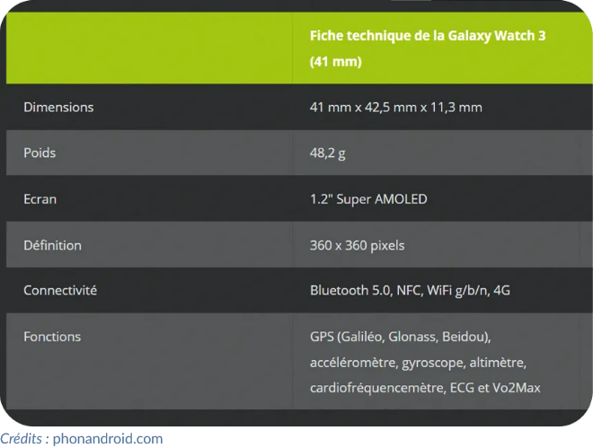

(Questions chosies sur les sites lelivrescolaire.fr et eleydet.fr)
IHM
1. Parmi les réponses suivantes, laquelle n'est pas une IHM permettant à l'opérateur d'envoyer des instructions ?
Informatique embarquée
2. Parmi ces trois affirmations sur l'informatique embarquée, laquelle est fausse ?
Sécurité
3. La sécurité de l'Internet des objets est un enjeu majeur :
Fiche technique
4. Le document ci‑dessous présente la fiche technique d'une montre connectée.

Crédits : lelivrescolaire.fr
Relever la ligne qui indique que cette montre est bien un objet connecté.
Internet des objets
5. L'Internet des objets est le nom donné :
Vrai/Faux n°1
6. Seuls les objets connectés ont une IHM.
7. L'informatique embarquée a pour but de rendre mobiles les équipements informatiques.
Frise chronologique
8. Classer par ordre chronologique les éléments suivants.
Serrure électronique
Certaines serrures sont dites électroniques et s'ouvrent en approchant un badge RFID. On peut retrouver l'heure de déclenchement et l'identifiant du badge sur un serveur.
9. Cette serrure est‑elle connectée ?
10. Le RFID est utilisé dans les péages d'autoroutes. Préciser dans quelle situation.
Télévision connectée
11. Pour interagir avec une télévision connectée, l'IHM est généralement :
Vrai/Faux n°2
12. Un écran est toujours une IHM.
13. Tous les objets contenant de l'informatique embarquée ont une IHM.
14. Pour un objet connecté, il est possible d'utiliser un navigateur Internet comme une IHM.
Capteurs et actionneurs
15. En les associant, déterminer si ces parties d'objets sont des actionneurs ou des capteurs.
.
.
.
.
Robot
Un robot ménager autonome est muni de capteurs à ultrasons.
16. Cocher la (ou les) grandeur(s) physique(s) mesurées par les capteurs du robot.
En vrac
17. Cocher le (ou les) organes d'une automobile moderne qui intègrent de l'informatique embarquée :
18. Qu'est-ce qui traite les données dans un système embarqué?
19. Il délivre un signal de sortie prenant toutes les valeurs comprises entre un maximum et un minimum :
20. Ce programme se propage et se duplique, par son propre moyen, sans contaminer un fichier hôte :